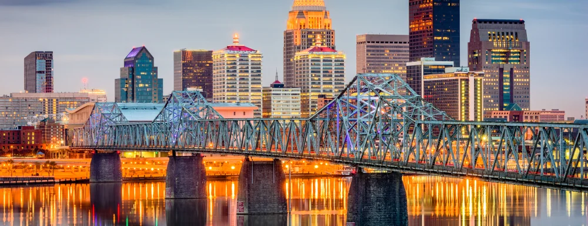

Cannabis Industry Opportunities
Kentucky
Want to learn how to open a dispensary in Kentucky? Kentucky's Gov. Andy Beshear signed SB 47 into law on March 31st, 2023, which legalized medical cannabis in the commonwealth starting Jan 1st, 2025. This also established the Office of Medical Cannabis in Kentucky which is the regulatory body responsible for the oversight of Kentucky's medical cannabis program.
A notable aspect of this application process which is projected to start July 1st, 2024 is that the state will be hosting a quasi-lottery process that will have the best of both qualifying applications and a lottery, effectively creating a schema for a high quality, fair application process.
In the current application round starting July 1st, of 2024 and ending on August 31st, 2024 not all licenses will be available. Tier 1-3 Cultivators, Processors, and Dispensaries will be the only ones available during this current round with Tier 4 Cultivators and Producers expected to come at a later date.
Opening a medical dispensary in Kentucky requires careful budgeting due to varying factors such as location, size, and operational costs. Starting a dispensary in Kentucky carries significant expenses, including a $5,000 application fee, an $30,000 licensure fee, and an additional $15,000 renewal fee. Kentucky also requires you to have a minimum sufficient capital requirement of $150,000, and general liability insurance of $1,000,000. A minimum budget of $500,000 is advisable for startup expenses for an Kentucky medical dispensary license. As of the time of this writing only 48 dispensaries will be permitted in this licensing round across 11 districts.
$200 for paper applications (nonrefundable; does NOT apply to Licensing Fee) Not required for on-line applicationsLicense fees for hemp grower in $400.00
Individuals and businesses interested in applying for a grower or processor/handler license can apply online here for no charge at the KDA’s ONLINE LICENSING PORTAL.
Starting July 1st. of 2024 Kentucky will host its medical cannabis application round for qualifying applicants. Kentucky's application process will close on August 31st, 2024 and on approximately September 15th, will hold a lottery for the prospective applicants if it is deemed necessary.
Locations are split between 11 Districts, across 48 licenses, with the exception of large metropolitan areas such as Lexington, and Louisville. Most areas of Kentucky will only receive 1 Dispensary per county or 4 per district, with the metropolitan districts receiving 6 licenses per district. On the Office of Medical Cannabis website they have a tool that will help assist you in choosing your ideal location, factoring in prohibited zones such as churches and schools, you can utilize this tool with a professional to find the best place to open your dispensary.
Kentucky's Office of Medical Cannabis has made it clear they are requiring a lot of the documentation up front for their cannabis licensing process, while other documents will be required after being awarded the conditional license. Some of the documents that will be required for entry into the lottery rounds are as follows:
While some of the documentation will be required after the licensing round will be as follows:While these are only some of the required documentation to open a dispensary in Kentucky, these are the common ones that all dispensaries require to open. There will more than likely be more additions to the ever growing list of documents as more industry best practices are refined.
In January 2019, Kentucky lawmakers introduced HB136 to legalize medical marijuana. The bill passed through the House Judiciary Committee on a 16-1 vote, but failed to pass a floor vote before the legislature adjourned for 2019.
On February 20, 2020, the Kentucky House passed HB136, which would authorize qualifying patients to access medical cannabis, by a vote of 65-30. The bill now goes on to the State Senate. This bill would require qualifying patients to receive written certification reissued every 90 days, and receive an exam by a physician at least once per year. An individual could legally possess up to 30 days’ worth of cannabis at their residence, and a 10 day supply on their person when traveling within the state.
In 2022, Gov. Andy Beshear, signed Executive Order 338 to expand the medical marijuana program within the state of Kentucky. By signing this executive order, the governor, has created a committee of 17 individuals with backgrounds in health care, addiction treatment, law enforcement, criminal justice, and advocacy in cannabis. These appointed individuals can be found within Order 338, and will report directly to the governor with their findings from the public.
From the KDA, 2019 press release: “The KDA received a total of 1,115 applications – 1,074 grower applications and 41 processor/handler applications. Applicants were asked to identify which harvestable component of the plant would be the focus of their research (floral material, grain, or fiber); some applicants selected more than one component. The KDA also approved 40 new applications from processors (in addition to 69 previously approved multi-year processor license holders who are renewing their licenses for 2019). Several universities will also carry out additional research projects in 2019...In 2018, 210 growers were licensed to plant up to 16,100 acres of industrial hemp and planted more than 6,700 acres. Program participants planted more than 3,200 acres in 2017, 2,350 in 2016, and 922 acres in 2015. Thirty-three acres were planted in 2014, the first growing year.”
In 2014, Kentucky Gov. Steve Beshear signed SB124 into law. This bill permits patients suffering from intractable seizure disorders to access cannabidiol (CBD) derived from marijuana. All individuals are permitted to possess and use CBD oil derived from hemp. Medical approval is required to possess and use CBD oil derived from marijuana.
Call us at (702) 533-4899 or please fill out our contact form!
Book a consultation with one of our experts and let us guide you.
With a current population of 4.5 million, Arcview Market Research and BDS Analytics project $7 million in legal cannabis sales.
If you are just starting your marijuana business, the best next step is to create a Business Plan to educate your team and prepare for the marijuana business license application process.
If you are ready to apply for a Marijuana Business License in Kentucky, please contact us or call our offices to set up an appointment. You can also explore other state opportunities or fill out our Contact Form to discuss strategies such as investment or partnership opportunities.
Our headquarters are located in the San Francisco Bay Area and Las Vegas Nevada. We offer a full suite of custom solutions for your cannabis business including business planning, license application development, and investment opportunities. If you are in need of assistance, please call us during business hours listed below. Thank you.
Operating Hours
Mon - Fri: 8am - 5pm PST
Head Office
2300 West Sahara Avenue Suite 800 Las Vegas, NV 89102

services@greenrushconsulting.com
© 2025 Green Rush Consulting LLC. All Rights Reserved.